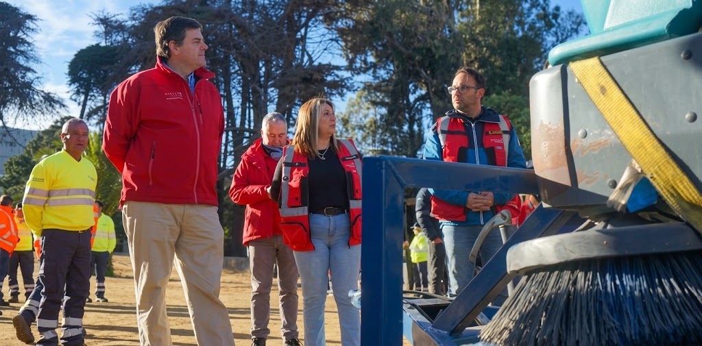
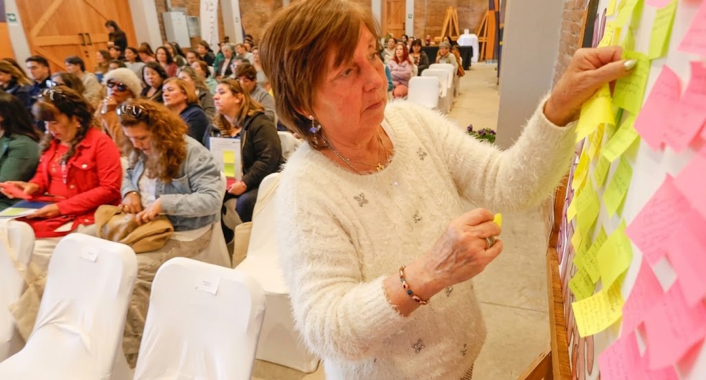
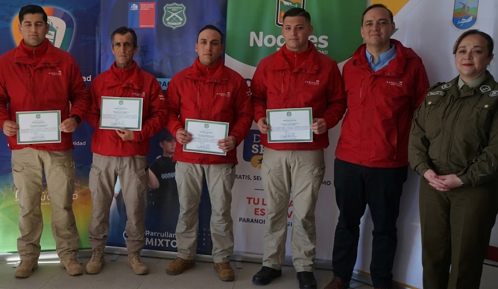
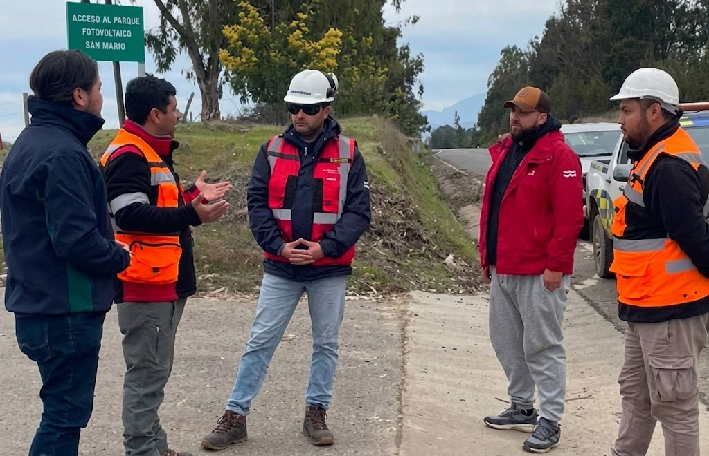
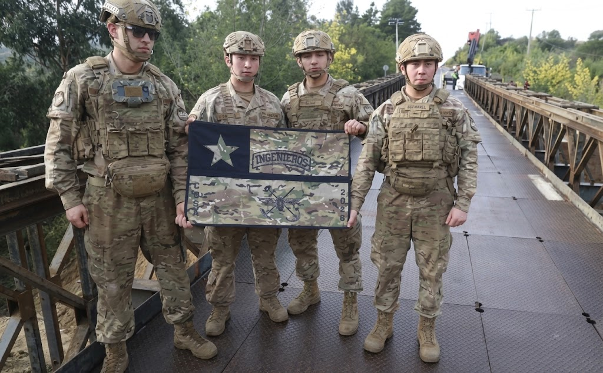
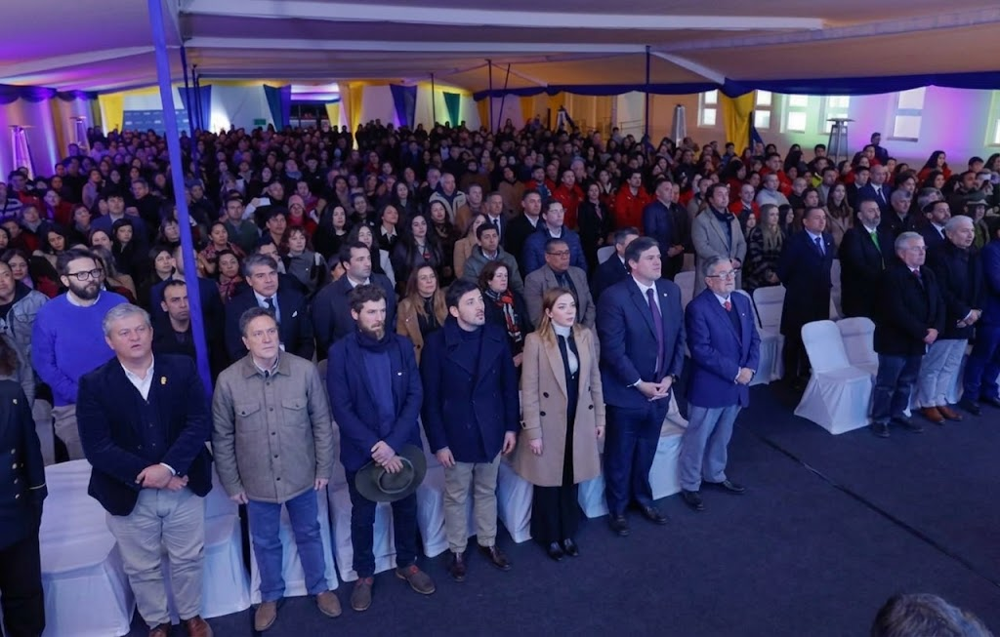

ZAPALLAR INICIA DIAGNÓSTICO LABORAL DE TRABAJADORAS DE CASA PARTICULAR
2 de septiembre 2026
COORDINACIÓN Y HERRAMIENTAS PARA FORTALECER LA SEGURIDAD EN ZAPALLAR
28 de agosto 2026
INSPECCIÓN PREVENTIVA IDENTIFICA MÁS DE 50 ÁRBOLES CON RIESGO EN RUTAS E-462 Y F-30
12 de agosto 2026
PUENTE MECANO RESTABLECE CONEXIÓN DE LA RUTA E-462 ENTRE LA LAGUNA Y CATAPILCO.
8 de agosto 2026
CUENTA PÚBLICA 2025-2026 E INAUGURACIÓN DEL CESFAM DE CATAPILCO
3 de julio 2026CUENTA PÚBLICA
En tus manos está el reflejo de todo el trabajo realizado cada año para la comunidad de Zapallar ¡Revísalo aquí!
Plan de Gobierno Local 2024–2028
Entérate de nuestros planes de gobiernos para mejorar nuestra comunidad.
Adultos Mayores
DIDECO
SECPLA
Deportes
- Primer Torneo WKF COPA ZAPALLAR 2025
- Conservatorio y Clínica de Fútbol Con Humberto Chupete Suazo
- Semanas por Localidad
- Team Zapallar 2025: 30 deportistas reciben becas municipales y apoyo técnico especializado
- Con Las Leyendas del Fútbol Chileno se Realizó Lanzamiento Exterior del Complejo Deportivo Cachagua